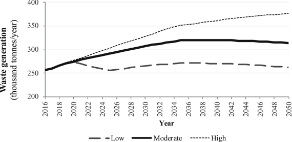
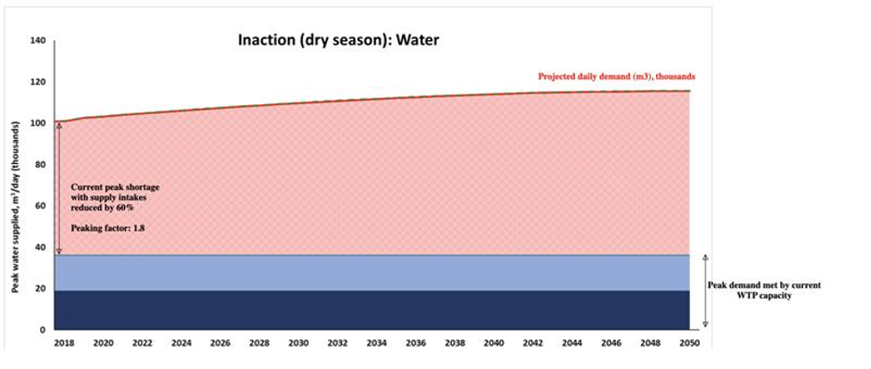
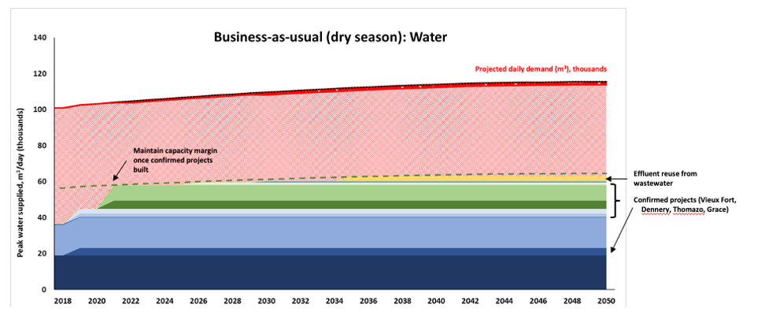
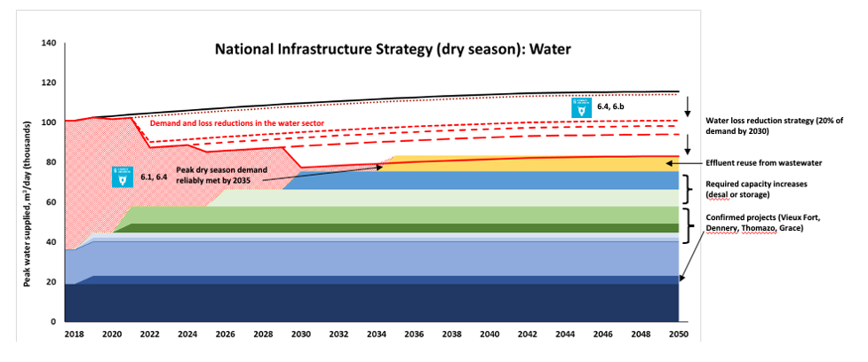
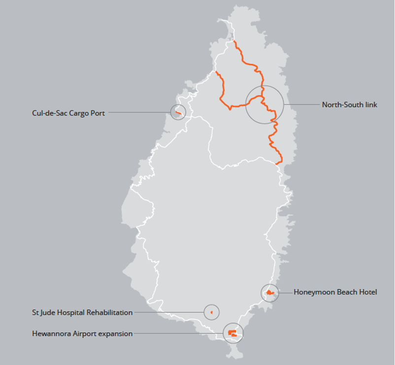
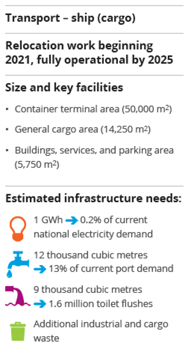
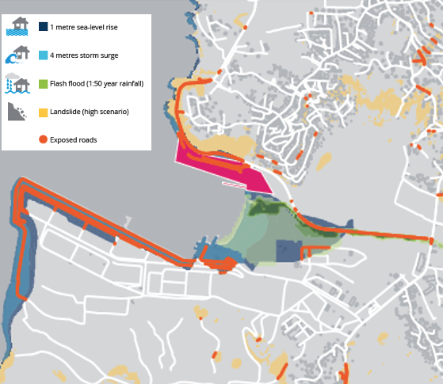
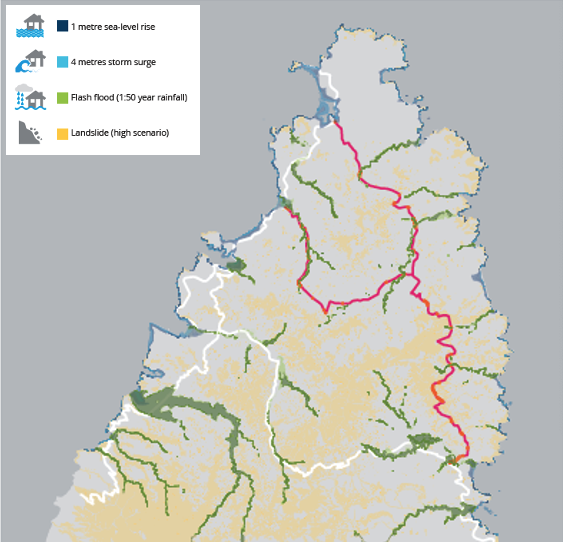

This mini-lecture provides practical examples of identifying future infrastructure needs, based on population growth, tourism growth and climate scenarios. Examples are taken from applications of a methodology to assess future infrastructure needs, usage and risk in the small islands of Curaçao and Saint Lucia.
In the previous mini-lectures 13.1-13.3, we have explored the drivers and ways in which we can predict the future need for infrastructure, different usage of infrastructure, and the different ways future infrastructure might be provided, which all include a set of different methods (see mini-lectures 13.1-13.3).
Here, we show examples from practical applications of these methods at the national scale, using examples of the Small Island Developing States (SIDS) Curaçao and Saint Lucia. These focus both on sectoral, and cross-sectoral examples and exemplify the different methods of predicting future infrastructure needs, including:
As described in mini-lecture 13.1, future infrastructure needs can be estimated using changes in population or economic growth, amongst other factors (Otto et al. 2016; Hall et al. 2016; Ives et al. 2017). Quantitative changes in these long-term trends can be identified using, for example, information on national economic or demographic projections, and can be complemented with expert judgement.
These methods were applied at the national scale in the small island Curaçao, including in the waste sector. Data on the current system (2016) was collected using existing national documents and complemented with data collected through interviews in 2017/18.
Population, tourism and economic growth were all identified as the main drivers for future waste generation. As described in detail in Fuldauer et al. (2019), population and tourism growth-related waste factors, which reflect various economic growth potentials for Curaçao, were utilised in order to create a low, moderate, and high growth scenario capturing future uncertainty (Figure 13.4.1).

Figure 13.4.1: Curaçao’s future waste scenarios until 2050 (Fuldauer et al. 2019). Calculations were based on waste generation factors for SIDS (Mohee et al. 2015; World Bank 2012), residential growth scenarios (Bals 2014) and tourism growth scenarios.
Various infrastructure strategies were then created (see mini-lecture 6.1), including an inaction, circular economy and a technology-led scenario, in order to evaluate the performance of these strategies under the various population and economic growth scenarios (Fuldauer et al. 2019).
As described in mini-lecture 13.3, infrastructure supply and use can also change in the future, including due to climate change. Notably, the total annual supply of a type of infrastructure at a national level does not always tell the full story due to factors affecting the way it is distributed and used across a country.
Examples of this include chronic drought and reduced river flow impacts on water infrastructure. While water treatment capacity at a national level was shown to be sufficient to meet annual water demand in Saint Lucia, the analysis accounted for the fact that chronic impacts of climate change on river flows during the dry season leave many communities with major water shortages throughout much of the year. Often, these periods correspond with peak holiday periods where many tourists arrive on the island. Figure 13.4.2 shows the possible extent of this shortage on peak water use days, with the capacity of some water intakes reduced by up to 60%.
In an inaction scenario, this disparity is projected to increase as (a) population and tourism increases, and (b) drying trends intensify due to climate change. Under a business-as-usual strategy, which includes the implementation of confirmed projects, this shortage in peak water supply is only slightly improved (Figure 13.4.3). In contrast, the national infrastructure strategy, which includes adaptation to chronic river runoff, can help eliminate the shortage and ensure continuous water supply, including in the dry season (Figure 13.4.4).

Figure 13.4.2: Inaction with respect to water infrastructure into the future

Figure 13.4.3: Business-as-usual investment in infrastructure into the future leaves peak shortage in the dry season

Figure 13.4.4: A national infrastructure strategy, including water loss reductions and infrastructure investments, can be a useful strategy to adapt to reduced chronic river runoff and associated reduced wastewater treatment capacity
As described in mini-lecture 13.2, there are various ways in which future infrastructure needs can be identified. Such infrastructure expansions include the construction of new infrastructure assets, which can be identified at a larger scale using future predictions or using existing databases of infrastructure plans, at high spatial resolution (see mini-lecture 13.2 and Lecture block 6).
In this practical example, we use existing databases of planned infrastructure projects at the national scale for Saint Lucia, and calculate the associated infrastructure needs and climate-related risk.
A database of five large infrastructure investments, which are to be constructed in the coming years, was provided by the Government of Saint Lucia (Figure 13.4.5)

Figure 13.4.5: Location of new infrastructure investments in Saint Lucia (Adshead et al. 2020)
Here, we showcase the future hazard risk for two of these new infrastructure projects, including a major port and a major new road.
First, a large new infrastructure project involves the relocation of the cargo services of the Port in the capital city to the Cul de Sac port, shown in Figure 13.4.6 below. As described in detail in (Adshead et al. 2020), this location for cargo handling allows reduced conflicts of resources and space with the cruise ship arrivals port in the capital Castries. The analysis calculated the estimated infrastructure needs of the port, which are summarised in Figure 13.4.6.

Figure 13.4.6: Estimated infrastructure need from proposed relocation and expansion of cargo port (Adshead et al. 2020)
The analysis finds that while the relocated cargo port will contribute to increased trade and enhance agricultural productive capacity by expanding access to international markets, it is critical to plan for increased infrastructure needs from the electricity, water, wastewater and water sectors resulting from the relocation and expansion of the cargo port.
In the previous section, we analysed the potential infrastructure needs resulting from proposed infrastructure assets. Here, we superimpose these future proposed infrastructure assets with future hazard data to identify potential hazard exposure.
As shown in Figure 13.4.7, we find that a fraction of the new port is located in a hazard-prone area, and is exposed to a storm surge and a flash flood scenario. Both these hazards are associated with tropical storms, projected to increase in intensity with climate change (Government of Saint Lucia 2017). Moreover, the roads which lead to the port are also exposed to these hazards, suggesting that accessibility to the port and the critical services it provides for more than 70 Sustainable Development Goal (SDG) targets are potentially exposed (Fuldauer, Thacker, and Hall 2021).

Figure 13.4.7: New proposed port in Saint Lucia exposed to storm surge, flash flood and landslides (Adshead et al. 2020)
Another key new infrastructure project is the construction of a new road linking the north and the south of the island (see Figure 13.4.8). Superimposing the future proposed road data with the hazard information, we find that in terms of metres and percentage of the total road length exposed:

Figure 13.4.8: Proposed north-south road (red) potentially exposed to storm surges, flash floods and landslides (Adshead et al. 2020)
These results highlight the importance of integrating future climate risk into infrastructure design at the outset of the planning process. Given that it is estimated that more than USD80 trillion of investment in new and existing infrastructure is required worldwide over the next 15 years (UNFCCC 2017), it is critical to ensure that climate risk is appropriately considered. A comprehensive approach to adaptation of infrastructure systems as part of the overall goal of achieving sustainability will be essential.
This mini-lecture provided an overview of practical examples of identifying future infrastructure needs, based on population growth, tourism growth and climate scenarios. These showcase how the content introduced in mini-lectures 13.1 and 13.3 can be put into practice, informing national scale decision-making.